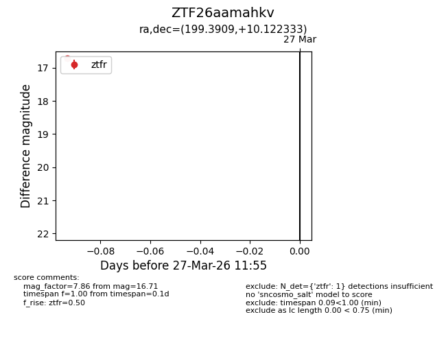
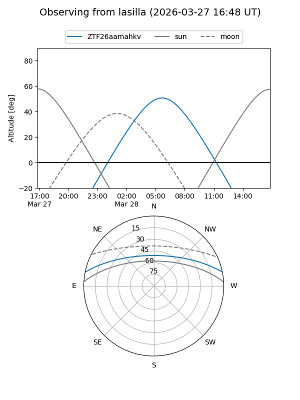
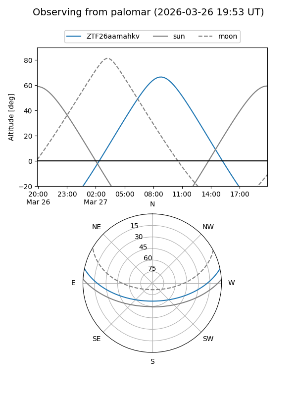

ZTF26aamahkv
Target ZTF26aamahkv at 2026-03-27 11:58
Aliases and brokers:
FINK: link
Lasair: link
ALeRCE: link
alt names
ZTF26aamahkv (ztf,fink_ztf)
Coordinates:
equatorial (ra, dec) = 199.3909,+10.12233
equatorial (HMS+DMS) = 13:17:33.82,+10:07:20.40
galactic (l, b) = (324.0745,+71.91335)
Flags:
Photometry:
last ztfr=16.71
1 ztfr detections
Lightcurve

Visibility


Additional plots